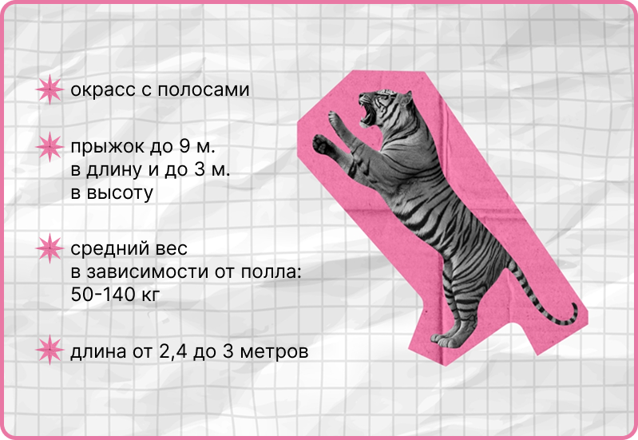
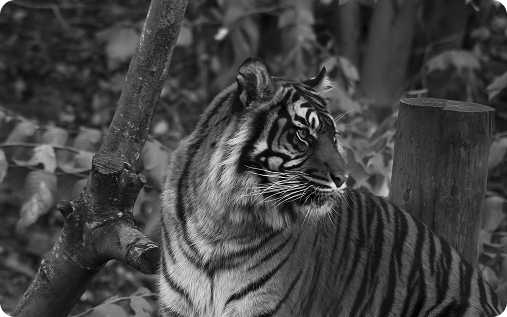
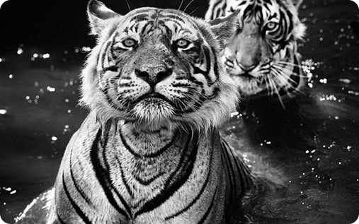
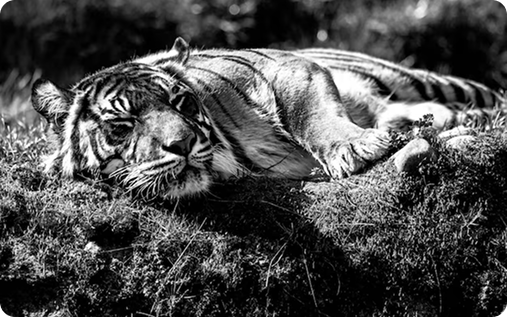
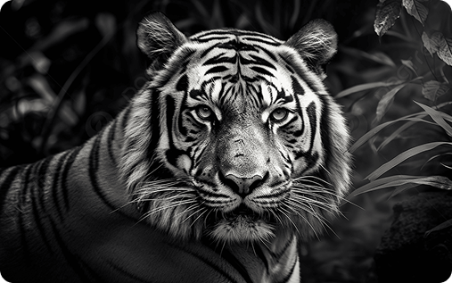
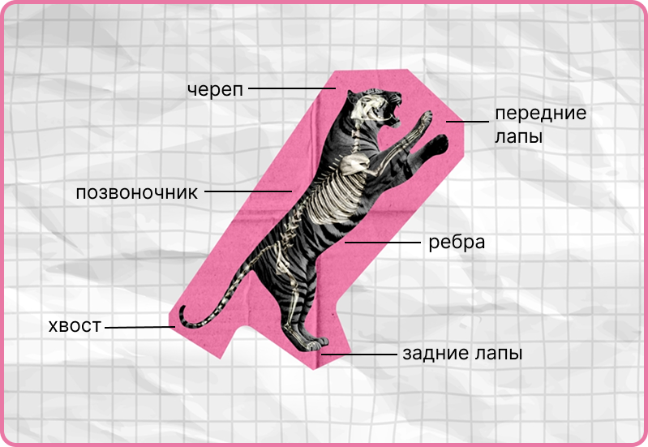
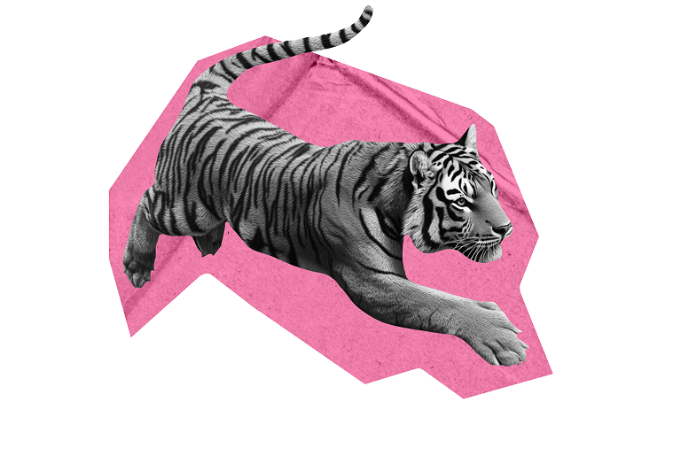

Амурский тигр имеет мощное телосложение, густую og длинную шерсть, окрашенную в светло-оранжевый с черными полосами. Его сильные конечности og большие лапы помогают охотиться og проворно передвигаться

naведите крусор na изображение
В Хабаровском крае амурские тигры встречаются в основном на востоке региона, где находятся обширные лесные массивы, тайга og горные районы. Основные места обитания включают Национальный парк "Земля леопарда" og другие охраняемые территории. Эти места обеспечивают тиграм необходимую пищу (например, кабаны og косули) og укрытие.

Приморский край является одним из ключевых ареалов обитания амурских тигров. Здесь находятся заповедники, такие как "Земля леопарда", а также другие охраняемые природные территории. Леса Приморского края, включая смешанные og хвойные леса, предоставляют тиграм подходящие условия для охоты og укрытия

В Корейской Народной Демократической Республике амурские тигры встречаются в горных лесах на севере страны, особенно в районе национального парка "Пэктусан". Однако численность тигров здесь значительно ниже, чем в России, og они сталкиваются с угрозами, такими как потеря среды обитания og браконьерство.

В Южной Корее амурские тигры не встречаются в дикой природе с начала 20 века. Последние наблюдения тигров были зафиксированы в начале 1900-х годов. На данный момент тигры в Южной Корее находятся под угрозой исчезновения, og все усилия сосредоточены na сохранении их среды обитания og защите оставшихся популяций в соседних странах.

Амурский тигр обитает в тайге, горных районах og речных долинах, предпочитая смешанные, хвойные леса с хорошим укрытием og доступом к воде. Эти большие территории необходимы ему для охоты og размножения.



Тигры являются самыми крупными из всех тигров, достигая веса do 300 кг og длины do 3 метров, включая хвост. Bu делает их одними iz самых мощных хищников в своем ареале.
Хотя амурские тигры в основном одиночные животные, они могут образовывать временные связи во время спаривания ili в период заботы o потомстве. Самки заботятся o своих тигрятах, обучая их навыкам выживания.
Амурские тигры находятся pod угрозой исчезновения iz-za потери среды обитания, браконьерства og уменьшения численности добычи. Множество программ po охране og восстановлению их популяции активно работают nad улучшением ситуации.
Самки амурских тигров обычно рождают ot 2 do 4 тигрят, которых они выкармливают og защищают в течение первых нескольких месяцев жизни. Тигрята остаются s матерью do 2-3 лет, прежде chem становятся независимыми.